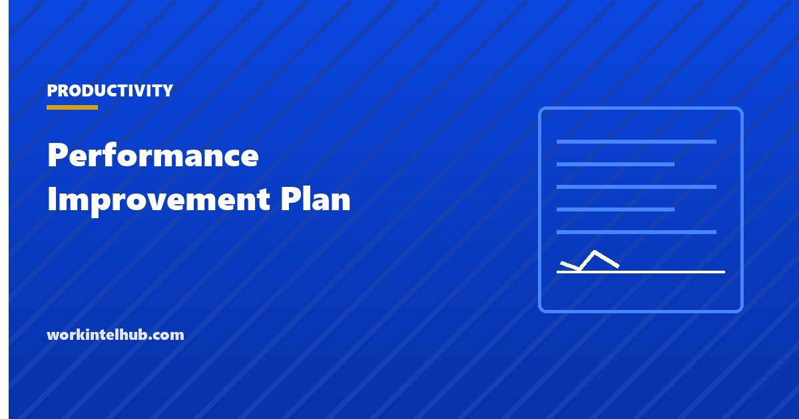

Performance Improvement Plan

A performance improvement plan is a written document that names a specific performance gap, states the standard required, sets out the support the employer will provide, and fixes a date by which the gap must close.
It is also, in most organisations, the last formal step before termination. Every guide to writing one covers the template. Almost none covers what happens if the employment does end and the plan becomes evidence, which is the part that decides whether the process protected you or created the claim.
What a PIP is actually for
Two purposes, and being honest about which one you are pursuing is the single decision that determines whether the plan works.
Remediation. You believe the person can meet the standard with clarity and support, and the plan supplies both. This is worth doing and it sometimes works.
Documentation. You have decided the employment is likely to end and you are creating a record showing the person was told, given a chance, and did not close the gap.
Most PIPs are quietly the second while being presented as the first. Employees generally know this, which is why a plan announced as developmental is often received as a countdown. That gap between what is said and what is meant is where the process loses credibility with everyone watching, not only with the person on the plan.
The workable position is that a genuine PIP has to be able to end either way. If there is no performance level the person could reach that would result in them staying, it is not an improvement plan and calling it one is the part that will read badly later.
The template
Copy from here. Every field earns its place; the notes afterwards explain why.
Employee: [name] Role: [role] Manager: [name]
Plan start: [date] Review dates: [dates] Plan end: [date]
1. The standard for this role. What is required of anyone in this position, stated in terms that can be observed. [the standard]
2. The gap. Where current performance falls short of that standard, with specific dated examples rather than characterisations. [dated examples]
3. What has already been discussed. Dates of previous conversations about this, and what was said. If there were none, say so.
4. What must change, and how it will be measured. Concrete and observable. "Improve communication" is not measurable; "respond to customer escalations within one business day, tracked in the ticket system" is. [measurable target]
5. Support the company will provide. Training, tools, reduced scope, mentoring, changes to workload. Name who is responsible for each and by when. [what the company will do]
6. Check-in schedule. Weekly or fortnightly, in the diary now, not arranged later.
7. What happens at the end. Stated plainly for each outcome: standard met, partial progress, standard not met.
8. How to raise a concern about this plan, including if you believe a health condition or a workplace factor is affecting your performance. Contact [HR contact].
Employee signature acknowledges receipt, not agreement: [ ] Date: [ ]
Manager: [ ] Date: [ ]
Section eight is the one most templates omit, and it does more legal work than the rest of the document combined. The reason is in the next section.
The accommodation rule that decides most disputed PIPs
This is the part the template guides leave out, and it cuts both ways rather than simply favouring the employee.
Per the EEOC guidance on applying performance and conduct standards to employees with disabilities, an employee with a disability must meet the same performance standards as everyone else. The ADA does not require an employer to lower a production standard, waive an essential function, or excuse substandard work as an accommodation. That is worth stating clearly, because it is widely assumed otherwise.
What the employer must do is make sure any needed accommodation was actually in place before applying performance management. If an employee says a disability is causing the problem, the guidance describes a specific sequence: state clearly what level of performance is required, ask why the employee believes the disability is affecting performance, and, if they have not requested one, ask whether an accommodation would help.
One further rule is absolute: an accommodation already granted may not be withdrawn as punishment for poor performance.
The practical consequence for the plan itself: a PIP that sets targets without first establishing whether the person had what they needed to meet them is the version that fails under scrutiny. Section eight of the template exists to open that conversation, on the record, at the start rather than at the tribunal.
Three things a PIP must not quietly count
Protected leave. FMLA absence cannot be held against attendance or output. A target expressed as monthly volume, applied unchanged to someone who was on protected leave for three weeks of the month, counts that leave against them even if nobody intended it. Set targets on time actually worked, or pause the plan for the duration of the leave and say so in writing.
Timing after protected activity. A plan that begins shortly after someone raised a complaint, requested an accommodation, reported a safety concern or took leave will be read against that sequence. That does not make it unlawful, and sometimes the timing is genuine coincidence. It does mean the documentation of the performance concern needs to predate the protected activity, which is only possible if concerns were recorded when they arose.
Standards applied to one person. If the target in the plan is one that others in the same role also miss without consequence, the plan is not measuring performance, it is selecting a person. Check the standard against the team before writing it down.
Our guides to attendance tracking and the exempt distinction cover the related traps on the hours side.
When a PIP is the wrong instrument
Four situations where a plan makes things worse rather than better.
- Misconduct. Dishonesty, harassment, safety violations. These are disciplinary matters with their own process, and running them through a performance plan muddles both.
- A capability gap that no amount of coaching closes in ninety days. If the role genuinely requires something the person does not have and cannot acquire in the time, the honest conversation is about a different role or an exit, not a plan designed to fail.
- A problem that is actually about the manager, the brief, or the workload. Putting an individual on a plan for a systemic problem produces a leaver and leaves the problem.
- A decision already made. Covered above, and worth repeating because it is the most common of the four.
Running the conversation
- Give the document before the meeting, not in it. Reading and reacting simultaneously produces a defensive conversation and no useful information.
- Have someone from HR present if termination is a realistic outcome. Not as an intimidation tactic but because a second account of what was said protects both parties.
- Separate the standard from the person. "This is what the role requires and here is where the work has fallen short" is a different conversation from "you are underperforming."
- Ask what is in the way. Then be quiet. This is where you find out about the tooling, the unclear brief, the health condition, or the second job you did not know about.
- Confirm the signature means receipt, not agreement. Refusing to sign should be recorded, dated and witnessed rather than treated as insubordination.
Consider what the conversation is landing in. The American Psychological Association's 2024 Work in America survey, among 2,027 employed US adults, found 43 per cent reporting lower psychological safety at work, and that those employees were far likelier to describe their workplace as toxic. In that environment a plan framed as support is unlikely to be heard as support unless the support is specific and actually arrives.
How long, and how it ends
Thirty, sixty and ninety days are the conventional lengths, and the right one follows from the work rather than from convention. The test is how long a full cycle of the thing being measured takes. A support role produces enough evidence in thirty days; a sales role with a ninety-day cycle cannot be judged in less than one, and judging it in thirty measures the pipeline the person inherited.
Write all three endings into the plan before it starts.
| Outcome | What happens | Common failure |
|---|---|---|
| Standard met | Plan closes, confirmed in writing | Nobody tells the person it is over |
| Real progress, not yet there | Short defined extension, once | Rolling extensions with no end |
| Standard not met | The stated consequence follows | Nothing happens, and the process loses meaning for everyone |
The first row is the one organisations forget. A person who met the standard and never received written confirmation is left assuming they are still on it, which costs you the retention you just earned.
Where the plan does end in exit, our page on exit interviews covers what the conversation can and cannot tell you afterwards.
Key takeaways
- A PIP names a specific gap, the standard, the support and a date. If it cannot end with the person staying, it is not an improvement plan.
- Under EEOC guidance an employee with a disability must meet the same standards. The ADA does not require lowering them.
- But the employer must ensure any needed accommodation was in place before applying performance management, and may not withdraw one as punishment.
- FMLA leave cannot be counted against a target. Set goals on time actually worked, or pause the plan in writing.
- A plan starting soon after a complaint, accommodation request or leave will be read against that timing, so concerns must be documented when they arise.
- If others miss the same target without consequence, the plan is selecting a person rather than measuring performance.
- Length should follow the work cycle. Thirty days cannot assess a role with a ninety-day sales cycle.
- Confirm success in writing. A person who met the standard and was never told assumes they are still on the plan.
Frequently asked questions
What is a performance improvement plan?
A written document that names a specific performance gap, states the standard required for the role, sets out the support the employer will provide, and fixes a date by which the gap must close. It is usually the last formal step before termination, which is why what it records matters as much as what it asks.
Does a PIP mean I am going to be fired?
Not necessarily, but it usually means the employment is at risk. A legitimate plan must be capable of ending with the person staying: if no achievable performance level would result in them keeping the job, it is documentation for an exit rather than an improvement plan.
Can an employer put someone with a disability on a PIP?
Yes. EEOC guidance is explicit that employees with disabilities must meet the same performance standards, and the ADA does not require lowering a standard as an accommodation. What the employer must do is ensure any needed accommodation was in place first, and it may not withdraw an existing accommodation as punishment for poor performance.
What should I do if a health condition is affecting my performance?
Say so, in writing, as early as possible. Under EEOC guidance, once an employee indicates a disability is affecting performance, the employer should clarify the standard required and ask whether an accommodation would help. Raising it after the plan has ended is far weaker than raising it at the start.
Can FMLA leave be counted against a PIP target?
No. Protected leave cannot be held against attendance or output. A monthly volume target applied unchanged to someone who was on protected leave for part of that month counts the leave against them, even without intent. Set targets on time actually worked or pause the plan and record that you did.
How long should a performance improvement plan last?
Long enough for one full cycle of whatever is being measured. Thirty days suits work that produces evidence quickly; a sales role with a ninety-day cycle cannot fairly be assessed in less than one cycle. Thirty, sixty and ninety days are conventions, not requirements.
Do I have to sign a PIP?
A signature normally acknowledges receipt rather than agreement, and the document should say so. If you disagree, sign to confirm receipt and add your disagreement in writing, or decline and let the employer record the refusal with a witness. Refusing to sign does not stop the plan running.
What happens if the employee meets the standard?
The plan closes and that should be confirmed in writing. This is the step most often skipped, and skipping it leaves someone who succeeded assuming they are still under threat, which loses you the retention the process just earned.